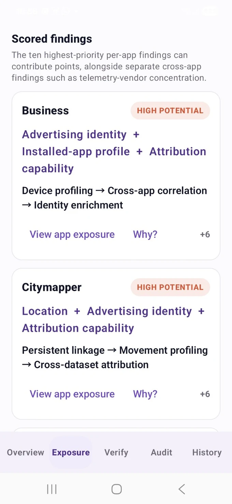
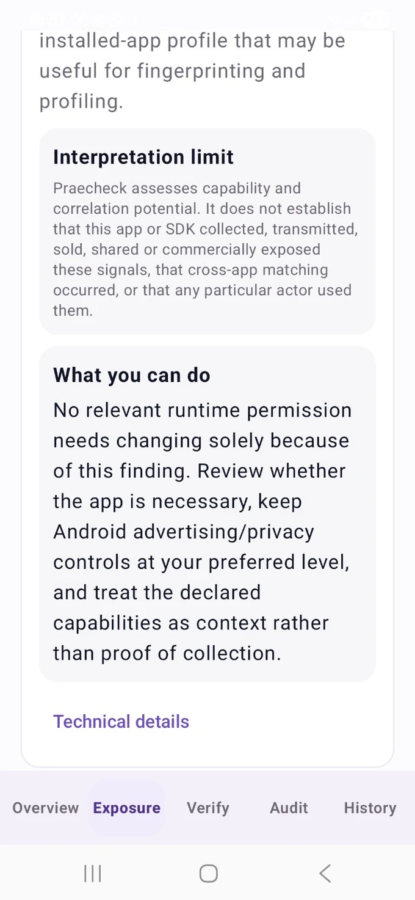
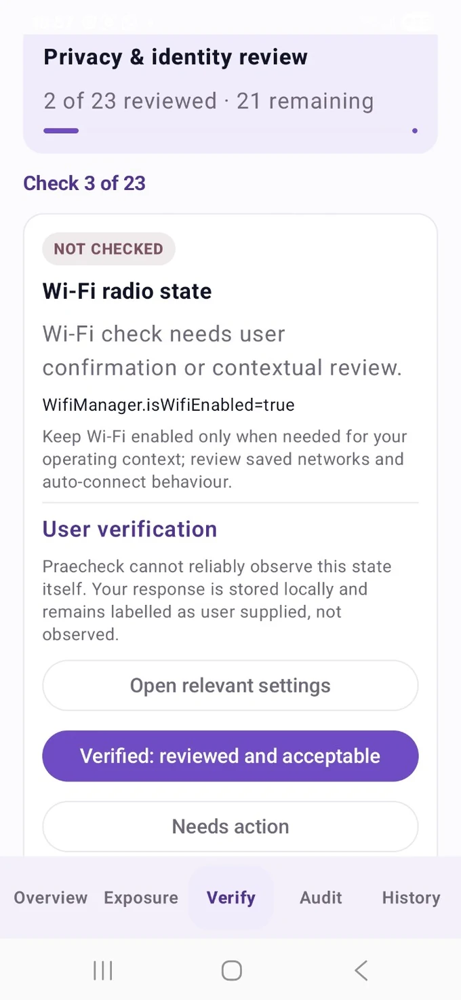
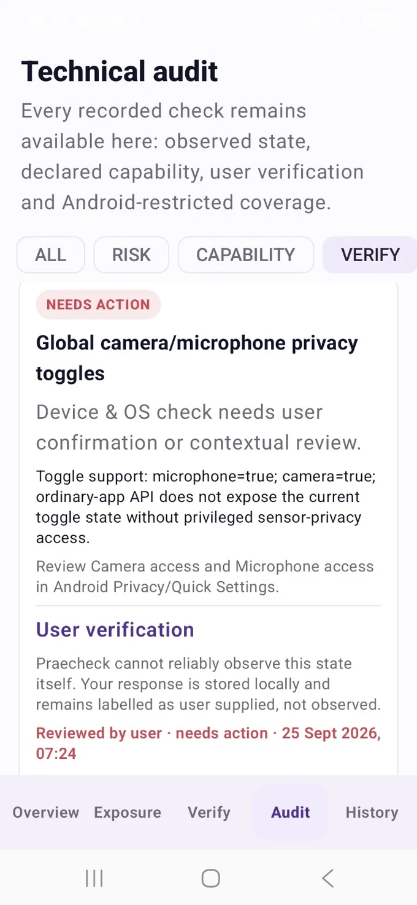
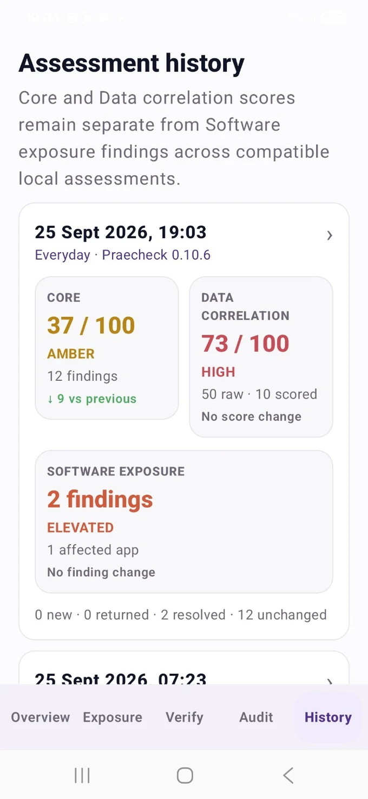

See the exposure and the apps involved
Findings start with privacy-relevant exposure and identify affected apps where the available evidence supports attribution, so you can see what contributed and why.
Praecheck is a specialist Android privacy and data-exposure assessment. It shows privacy-relevant findings on your device, links them to affected apps where the evidence supports attribution, flags settings you need to verify, and shows what changed between assessments.
Assessment processing stays on the handset. The production app does not request Android's INTERNET permission, and installed-app context, findings, verification responses and assessment history are not uploaded as part of the assessment.

Praecheck turns locally available Android state into a review you can understand and revisit, without pretending that every privacy-relevant condition can be observed automatically.
Findings start with privacy-relevant exposure and identify affected apps where the available evidence supports attribution, so you can see what contributed and why.
Machine-observed state is kept separate from settings that Android requires you to confirm yourself. Praecheck labels verification items instead of guessing.
Reassess after installing or removing apps, changing settings or updating Android. Compatible assessments distinguish new, returned, resolved and unchanged findings.
Praecheck keeps current device state, correlation potential and software exposure context separate. Findings explain what was observed, what it could mean, what you can do and the technical evidence behind it.
Compact app findings show the contributing signals, potential outcome and score contribution, with deeper app exposure detail available on demand.

Praecheck distinguishes granted access, declared capability and inferred SDK context, and states clearly when evidence does not establish collection, transmission, sale, sharing or commercial exposure.

Guided checks keep user-supplied confirmation separate from machine-observed state. Verification responses remain local and are timestamped for later comparison.

Audit keeps observed risk, declared capability, verification, restricted coverage and pass records available without duplicating the main Verify workflow.

Compatible local assessments show score movement, new, returned, resolved and unchanged findings, while incompatible assessment models start a new comparison baseline.
Three assessment domains are supported by deeper app/access review, connectivity context and local history — without collapsing different kinds of evidence into a single claim.
Current, observable Android state and granted access — including permissions, special access, connectivity and device configuration relevant to exposure.
Installed-app and SDK capabilities that could support profiling, identity linkage, attribution or enrichment if relevant signals are actually collected and associated.
Exact embedded component versions are matched against Praecheck's bundled offline advisory catalogue, with conditional data-access paths kept separate from other software issues.
Review sensitive granted permissions, background access, app declarations and other locally visible characteristics worth checking.
Review locally visible Wi-Fi, VPN, DNS, Bluetooth and nearby-device conditions that can add association or contextual exposure.
Compare compatible assessments, identify returned or resolved findings, see advisory freshness and export detailed evidence to CSV.
Praecheck records current state, prioritises supported exposure findings, identifies checks requiring verification, and preserves the context needed for later comparison.
Collect the Android state and app metadata available to the local assessment.
Separate current exposure from verification items and rank supported findings.
Inspect rationale, confidence, evidence and remediation for each relevant finding.
Compare a later compatible assessment and distinguish device change from model change.
Apps are installed and removed, permissions and settings change, and Android updates. Compatible assessments distinguish new, returned, resolved and unchanged findings. If the assessment model itself changes, Praecheck starts a new comparison baseline rather than presenting a model change as a device change.
Compare score movement and finding state only when assessments use a compatible model.
Identify a finding that was previously resolved and later returns.
Retain up to 50 assessments on-device with version and role context.
Record a local 30, 60 or 90-day recheck plan without background monitoring.
The production Android application performs its assessment locally. Installed-app context, assessment findings, verification responses, comparison history and role context are not uploaded as part of the assessment process.
Purchase and activation are separate: the website and licensing service process the order and installation details needed to issue a licence; they do not receive your Praecheck assessment results. Praecheck is a data exposure assessment tool, not antivirus, anti-malware or a spyware/compromise detector.
Assessment logic executes on the handset against locally available Android state.
The assessment does not depend on a cloud account, remote scan engine or network lookup.
Assessment findings are not driven by advertising, affiliate placement or sponsored ranking.
Device roles add operational context to local assessment history. They do not modify Core scoring or silently re-weight findings.
Maintain a baseline for a primary personal Android device.
Separate assessment history for a device used for a narrower, sensitive purpose.
Record professional-use context without changing the underlying exposure model.
Compare assessments around changes in apps, permissions and connectivity.
£14.99 one-off. Up to 2 personal Android devices, 12 months of Praecheck updates and no subscription.
.pcl licence file.
On your second device, use that device's installation code with the
same purchase email and purchase reference.
Activate another device →
.pcl licence file for your installation.£14.99 one-off for up to 2 personal devices, including 12 months of updates. Install from Google Play for verified installation and automatic app updates, or use the signed direct APK.
Praecheck evaluates three independent domains: Core exposure from observed/current Android state and granted access; Data correlation exposure from app/SDK capabilities and potential association, profiling or enrichment value; and Software exposure from exact embedded component versions matched against the bundled offline advisory catalogue. Findings include evidence context and practical actions where appropriate.
No. The production Android app is designed to perform its assessment locally and does not request Android's INTERNET permission. Assessment results and history are stored on the device.
No. Praecheck is a data exposure assessment tool. It does not claim to detect malware, spyware, surveillance actors or compromise.
Core exposure prioritises observed/current Android state and granted access. Data correlation exposure separately assesses app/SDK capabilities and the potential usefulness of data combinations for association, profiling or enrichment if the data were actually collected. Software exposure separately identifies exact embedded component versions that match the offline advisory catalogue, while distinguishing conditional data-access paths from other software issues. The domains are independent and are not evidence that a phone is compromised or that a specific app sold, shared or transmitted data.
Your exposure profile can change when you install or remove apps, change permissions, update Android, travel, change networks or use the device differently. Praecheck can compare compatible local assessments to show what changed.
Assessment history, device role and recheck preferences are stored locally on the Android device. Praecheck keeps a bounded history of up to 50 assessments.
Praecheck Personal is a £14.99 one-off personal-use licence for up to 2 Android devices and includes 12 months of Praecheck updates. It includes the full assessment, verification, history, evidence and export capabilities shown on this site.
Install Praecheck from Google Play for verified installation and automatic app updates, or download the signed APK directly from Praescius. Praecheck Personal can be purchased directly through the website for £14.99 one-time. After payment, enter the purchase email and the Praecheck installation code for the device to create a signed .pcl licence file. Licence verification is performed offline in the Android application.